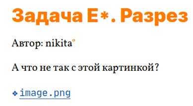
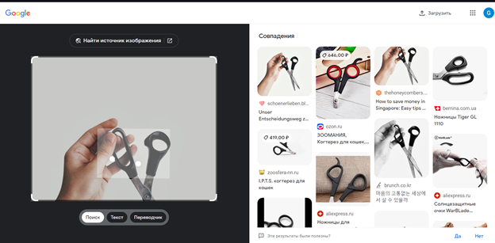
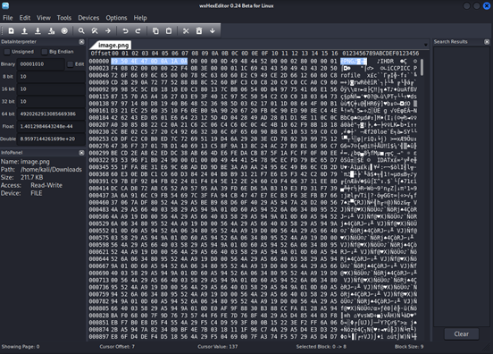
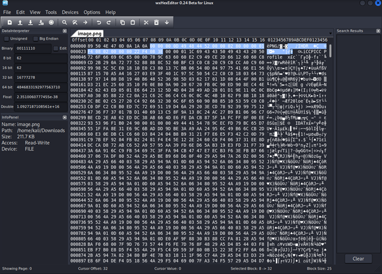
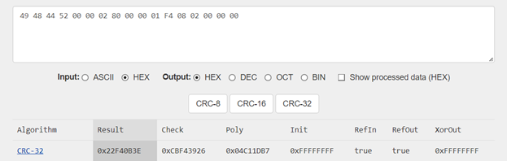
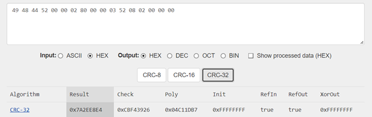
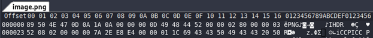
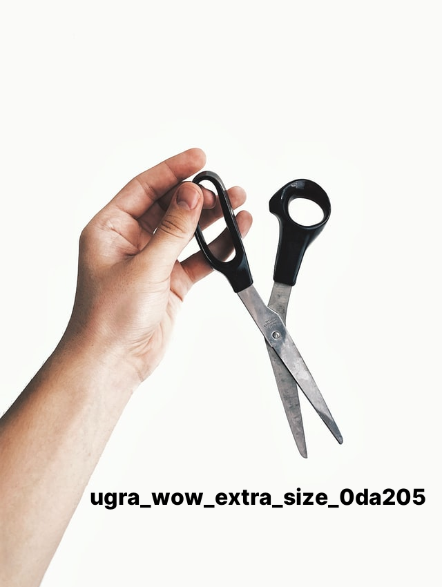

Задача E*. Разрез. Курс UgraCTF. Автор: Шаталов Вадим

task.png
При скачивании получаем такое изображение.
phototask.png
Если поискать это изображение, то можем найти его оригинальную версию.

searchphoto.png
Можно предположить, что изображение было обрезано, но скорее всего не привычным для нас методом, а через «код» изображения. Попробуем расширить эту картинку через изменение его «кода».
Сначала немного матчасти. Нам надо изучить, как устроен .png. Для этого обратимся на статью в habr’е – https://habr.com/ru/post/130472/
У нас есть подпись PNG-файлов, которая всегда одинакова, состоит из 8 байт, и представляет собой (в hex-записи) 89 50 4E 47 0D 0A 1A 0A
Посмотрим на наше изображение через hex-редактор, в моём случае это wxHexEditor.

orighex.png
Да, такой у нас имеется, двигаемся дальше. После подписи (сигнатуры) следуют чанки. Чанки — это блоки данных, из которых состоит файл. Каждый чанк состоит из 4 секций: длина, тип (имя) чанка, его содержание и CRC-32 (контрольная сумма чанка). Нам нужен чанк с основной информацией об изображении – IHDR, он обязательно идёт первым после сигнатуры.
Блок данных в IHDR содержит следующие поля:
· Ширина, 4 байта
· Высота, 4 байта
· Битовая глубина (bit depth), определяет количество бит на каждый сэмпл (не пиксель), 1 байт
· Тип цвета, состоит из 3 флагов 1 (используется палитра), 2 (используется цвет, не монохромное изображение), and 4 (присутствует альфа-канал), 1 байт
· Метод сжатия. На данный момент доступно только значение 0 — сжатие по алгоритму deflate. Если значение отлично от 0, чанк считается нераспознанным, и декодер рапортует об ошибке. 1 байт
· Метод фильтрации. Так же, как и в случае сжатия, на данный момент может быть только нулем. 1 байт
· Interlace(переплетение) метод. Определяет порядок передачи данных. На данный момент доступно 2 значения: 0 (no interlace) и 1 (Adam7 interlace). 1 байт
И так, план действий: находим высоту в чанке, изменяем на большее значение, считаем контрольную сумму, изменяем контрольную сумму в чанке, открываем расширенное изображение – «Вы великолепны!»

chunk.png
И так приступим. Полностью наш чанк выглядит так: 00 00 00 0D 49 48 44 52 00 00 02 80 00 00 01 F4 08 02 00 00 00 22 F4 0B 3E. После сигнатуры у нас идёт 4 байта, которые определяют длину содержания чанка. Значение нашей длины 00 00 00 0D, следовательно 13, переводя из hex. Далее название чанка в hex – 49 48 44 52 (IHDR), после уже интересующая нас информация. Сначала идёт ширина, потом высота, каждый блок по 4 байта, следовательно, высота имеет значение 00 00 01 F4. Это будет 500 в десятеричной системе исчисления. Увеличим до 850 – 352 в hex, то есть 03 52, если делить по байтам. Заменяем на 00 00 03 52. Наш чанк теперь имеет значение 00 00 00 0D 49 48 44 52 00 00 02 80 00 00 02 52 08 02 00 00 00 22 F4 0B 3E. Осталось только пересчитать чек-сумму, иначе фото не откроется. А считается она по блокам «Тип (имя) чанка» и «Содержание чанка». То есть по 49 48 44 52 00 00 02 80 00 00 01 F4 08 02 00 00 00 считалась изначальная чек-сумма. Давайте проверим себя. Для этого понадобится любой онлайн калькулятор CRC-32. Я воспользуюсь https://crccalc.com 
crcorig.png
Вставляем наш hex и получаем ту же самую чек-сумму, что и в изначальном файле. Тогда посчитаем с нашей новой высотой.

ourcrc.png
Получаем 7A2EE8E4. Заменяем на новое значение в редакторе хекса.

solvedchunk.png
Сохраняем наш изменённый файл. Открываем и видим наш флаг!

solvedphoto.png